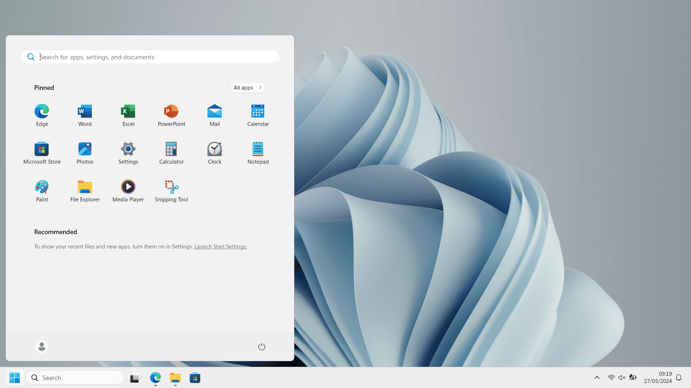
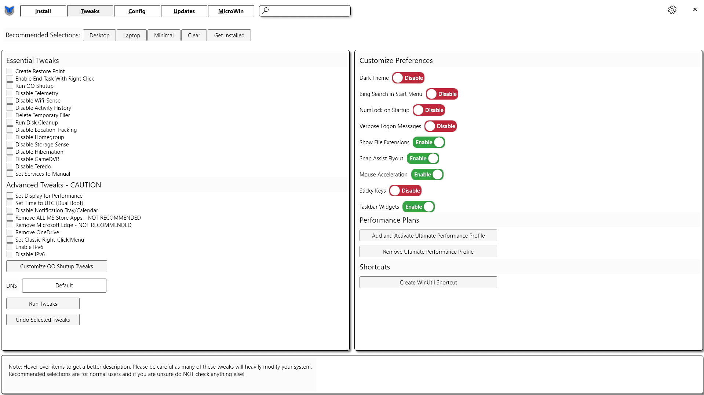
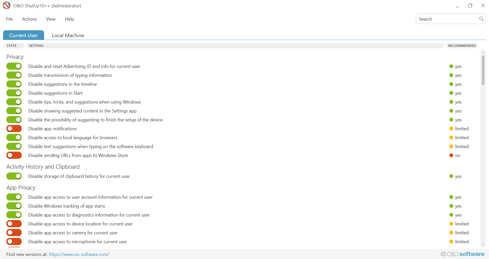
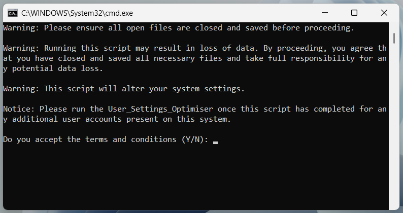

Debloating Windows 11 24H2
Windows 11 is free of adware and spyware if you set it up correctly, read on to learn how you can achieve this.
Introduction
Have you noticed that your computer is full of apps that you don't use? Have you noticed that your computer is constantly telling you to try a new awesome feature or save money by doing X Y or Z? Have you noticed that your computer is getting just slower in general since upgrading to Windows 10/ 11?
If you have noticed one or more of these things it is because your computer is full of unnecessary bloat, adverts, and tracking, this makes your computer work much harder than it needs to, this results in a perceived slowdown in older computers as they age.
If you read on, I will explain why bloat is a problem, why it is getting worse and what you can do to make your computing experience better.
Why is the bloat getting worse?
Most computers today run either Microsoft Windows 10 or Microsoft Windows 11, Windows 10 was offered as a free upgrade for Windows 7 and Windows 8 users, Windows 11 is currently being offered as a free upgrade for Windows 10 users.
How can Microsoft afford to give away their latest software for free? Microsoft makes a lot of money from advertising and selling subscription services for things like Microsoft Office, OneDrive, Teams, etc, this means that it was more profitable for Microsoft to give away later versions of Windows for free as this was the perfect way for them to push new subscription services and integrate them into your computer.
Why bloat is a problem for you and your computer.
You might be asking yourself why should I care about my computer getting slower and having more adverts? The real answer is that a computer is a tool and should be treated as such, if you are using your computer, you are doing it for a particular purpose such as storing photos, writing E-mails, filling out spreadsheets, online shopping, gaming, etc.
The problem with bloat on your computer is that it distracts you from the task at hand, it distracts you so that you take longer to carry out the task you set out to do so that you are exposed to even more bloat and advertising, this also makes you more tempted to replace your computer as you will get frustrated with how slow and cumbersome it has gotten.
Most new computers come with a Microsoft Windows licence bundled in with the price of the hardware, this means that if you do decide to get a new computer because of the bloat, Microsoft are still making money from you, and you are now out of pocket and creating E-waste in the process.
What are the different ways I can debloat my Windows 11 computer?
There are many different methods that you can use for debloating your Windows 10/ 11 computer, these vary widely in complexity, it is possible for you to manually delete apps you don't want installed and manually disable the bloatware through things like Group Policy Editor, it is also possible for you to use automated scripts or advanced tools that allow you to disable and uninstall the bloat from your computer.
There are a few tools that I would recommend for debloating your computer system including:
- Chris Titus: Ultimate Windows Utility
- O&O Software: O&O ShutUp10++
- Hackboto Tech Tips: System_Settings_Optimiser
- Hackboto Tech Tips: User_Settings_Optimiser
I advise you to use caution when using random cleanup and debloat tools from the internet as some of these might not be correctly tested or might be malicious and intentionally damage your computer system, therefore I recommend that you stick to the scripts and tools that I have tested personally.
I advise that you backup your computer before proceeding, you can learn about backing up your computer and your files in my "Backing Up Windows 10/ 11" guide, link below.
View Backing Up Windows 10/ 11 guideChris Titus: Ultimate Windows Utility
It might look complicated, but it is really simple to use, you simply click on the options you want to enable/ disable and click the run tweaks button at the bottom.
This tool is good because you do not need to download any scripts or anything to run it, just need to open the Terminal as an Admin.
To open Terminal as an admin:
- Right click on the start button 🪟.
- Click on "Terminal (Admin)".
- In the User Account Control popup, click yes. *You may need to enter your admin account password.
These are the options I would advise you use on the Tweaks tab, once you set them to your preference, you need to click the "Run Tweaks" button at the bottom of the page.
You can learn more about the Chris Titus: Ultimate Windows Utility by clicking on the link to the official webpage below.
Visit Chris Titus WebpageO&O Software: O&O ShutUp10++
O&O ShutUp10 might be quite intimidating at first, however it is really easy to use, you simply click on the options and toggle them on (green) or off (red).
There are two tabs on O&O ShutUp10, Current User and Local Machine. Current User means that the settings applied will only apply to the user who is running the tool, if you have more than one profile on your computer yours will be the only one that is impacted. Local Machine is the same as Current User, however it has more options available and will apply to all of the user profiles on your computer.
When Using O&O ShutUp10 I recommend that you apply the recommended settings to both Local Machine and Current User, to do this you must:
- Click on Current User, this will make the settings apply to your user account.
- Click on Actions at the top of the page.
- Click on only apply recommended settings.
- Click on Local Machine, this will make the changes apply to your machine and all the other user accounts.
- Click on Actions at the top of the page.
- Click on only apply recommended settings.
- Now close O&O ShutUp10, this will apply the changes, you might need to restart your PC if you are asked.
ShutUp10 is free to download for home usage, however it is proprietary, this means that you must comply with the EULA that is outlined on the O&O Software website, you can find a link below to the O&O Software website.
Visit O&O Software WebpageHackboto Tech Tips: System_Settings_Optimiser & User_Settings_Optimiser
It might not be the prettiest solution but the Hackboto Tech Tips System_Settings_Optimiser & the User_Settings_Optimiser scripts are really simple to use and require no technical knowledge to operate.
The Hackboto Tech Tips System_Settings_Optimiser and User_Settings_Optimiser works by changing registry entries on your computer system, this allows the script to gain access to hidden system settings that control things like the level of telemetry is collected, the content that is delivered to your computer system. The script also works by disabling telemetry and data collection services that are running on your computer.
The Hackboto Tech Tips System_Settings_Optimiser and User_Settings_Optimiser are ideal for people who do not have a high level of technical knowledge and want something that is quick and easy to use.
You can learn more about the Hackboto Tech Tips System_Settings_Optimiser & User_Settings_Optimiser by clicking on the link below.
Learn MoreWhat can I expect after debloating Windows 11?
After debloating Windows 11, you might find that some superficial functionality is missing, this includes things like the Windows Co-Pilot, Widgets, Windows Spotlight, this is because these services have a detrimental impact on the performance of your computer and are a means for serving you advertisements and harvesting your data and are therefore removed as they are considered as bloat.
You will find that your computer will run a lot faster once it has been debloated, this is because the computer is collecting a lot less data from your system and downloading a lot less content in the background, this will also mean that your battery life will be better on portable PCs like Tablets and Laptops.
You will not notice any differences with regards to the way your computer works, however you will find that there will be less popups and notifications asking for your feedback or suggesting recommended settings.
Page Updated: 27/05/2024
Page Author: Hackboto